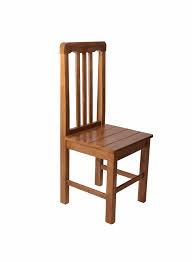

cadeira maneira

cadeira top
Os egípcios adicionam encostos aos assentos e inventaram a cadeira.
As cadeiras mais antigas de que se tem notícia são as cadeiras egípcias, que demonstram ter sido de grande riqueza e esplendor. Feitas de ébano e marfim, esculpidas em madeira dourada, elas eram cobertas com materiais caros e foram apoiados em representações das pernas por formas bestiais ou em figuras domésticas.
Foram criadas as cadeiras que balançam, giram, embalam, se reclinam , se dobram , massageiam e até eletrocutam, mas antes de todas elas, há cerca de 4.800 anos, foi inventada a cadeira em sua forma mais simples.
Mas de 1000 anos, antes disso, o homem criou uma maneira de descansar em posição sentada elevado ao chão em assento simples sem encosto.
Esses bancos se tornaram uma arte entre os egípcios antigos. Além de criarem assentos ornamentados, os artesões egípcios também pensaram em sua função, fabricando bancos dobráveis.
Alguns têm trilhos de apoio e hastes transversais em talhadas com cabeças de ganso em custadas de marfim, lembrando penas e olhos.
Na terceira Dinastia (2.650 – 2.575 A.C), os egípcios adicionaram o assento seu maior adorno: Um encosto para manter a pessoa sentada em posição reta.
De inicio um apoio lombar simples, altura do encosto foi aumentando ate se chegar às cadeiras de espaldar alto.
Assim como antes os egípcios transformaram a cadeira em arte porem sem sacrificar sua função. No médio império (2040-1640 AC) foram acolchoadas para oferecer mais conforto e os encostos eram altos. Curvas eram confeccionadas com tábua de madeira que se apoiavam sobre pernas finas. Às vezes, eram pintadas para terem a aparência de pele de animais. Já no novo Império (1540 – 1070 AC) foi acrescentado um novo componente: braços.
Milhares de anos depois, conforme a humanidade foi se tornando mais sedentária – descansos retráteis para pernas se tornaram uma opção comum na busca pela cadeira mais confortável do mundo.
Observe as fotos e veja que nossos antepassados já pensavam sobre a importância de se apoiar os pés. Ao se apoiar os pés, ao comprimir o piso ou apoio, a reação desta força se traduzirá no apoio lombar ou nas costas através do espaldar ou também chamado encosto. Assim para que haja contato, pressão, a verdadeira mão de Deus ao arredor de suas costas, da sua região lombar é necessário que o usuário comprima contra o encosto. Para isso é necessário a força de reação somente possível através dos pés.
Como dissemos, as cadeiras mais antigas de que se tem notícia são as cadeiras egípcias, que demonstram ter sido de grande riqueza e esplendor. Feitas de ébano e marfim, esculpidas em madeira dourada, elas eram cobertas com materiais caros e foram apoiados em representações das pernas por formas bestiais ou em figuras domésticas.
As primeiras cadeiras em série foram cadeiras Thonet numeradas foram as primeiras a serem produzidas através do curvamento de madeiras e pioneiras também na venda por catálogos.
Na revolução industrial temos o grande ponto de mudanças quando peças únicas dão lugar à produção em série. A tecnologia está mais à mão e designers podem ter suas criações multiplicadas sob um novo conceito; o da funcionalidade. A revolução industrial do final do século XIX, além de revolucionar os meios de produção, influenciou o modo de vida e criou verdadeiras revoluções de conceitos e comportamento. O excesso de detalhes e adornos das peças antes artesanais cede lugar ao minimalismo do conceito “forma e função” e da busca pelo novo.
O século XX viu o uso crescente de tecnologia na produção de cadeiras. O uso de metal tanto no corpo quanto nas pernas aumentou. Uma das primeiras cadeiras a se tornar famosa foi a Hill House de Charles R. Mackintosh em 1928.
Marcel Breuer foi o precursor do design arrojado para as cadeiras; sua criação, a cadeira Wassily, inspirada nos tubos de sua bicicleta,é um verdadeiro clássico do design mundial e como todo clássico, é atual quase cem anos depois. Aí dá origem ao sistema de construção de mobiliário tubular usado ainda hoje. De tão atual, há quem diga que a cadeira Wassily tem design contemporâneo.
Os móveis modernos criados sob a influência da escola da Bauhaus na primeira metade do século XX deram origem não só a estilos e formas, mas a tecnologias de fabricação e suas criações se multiplicam e sofrem releituras das mais diversas formas.
O Design Italiano é outro tema de suma importância e influência no design das cadeiras, pois graças ao seu encanto discreto mas irresistível, o design italiano tem seus admiradores incondicionais em todo o mundo. Depois da 2ª Guerra Mundial, sobretudo a zona de Milão, se tornou a Meca do design internacional.
O design contemporâneo por sua vez, está aí, seus designers estão em plena atividade produzindo e criando inovações.
O contemporâneo parte da raiz do modernismo e vislumbra a beleza e a liberdade se transformando apenas no “belo”, onde forma é a diretriz, sendo o único motivo para criar e encantar. É a era do “Design Puro”.
A cadeira continua sendo um símbolo desta criação e aparece também no trabalho de artistas de maneira polêmica e muitas vezes inusitada.
Hoje, a beleza perdura porém, com a globalização, as Normas Regulamentadoras e com o aumento da consciência da importância do “conforto” para o usuário, designers passam a criar em conjunto com engenheiros e ergonomistas em nome da melhor adaptação HOMEM X INSTRUMENTO. Surge a ERA da CONSCIÊNCIA . Surge a visão DESIGN X ERGONOMIA, superando obstáculos e desenvolvendo novas tecnologias, novos projetos e novas expectativas.
Os tempos de hoje pedem profissionais mais diretos, com simplicidade, objetividade e, principalmente, técnica e CONSCIÊNCIA.
Cada vez mais vemos produtos que utilizam em sua concepção, materiais recicláveis, madeiras de reflorestamento, aproveitamento de materiais de maneira ecologicamente correta, tingimento com pigmentos naturais e não poluentes e, acima de tudo, ERGONÔMICOS.